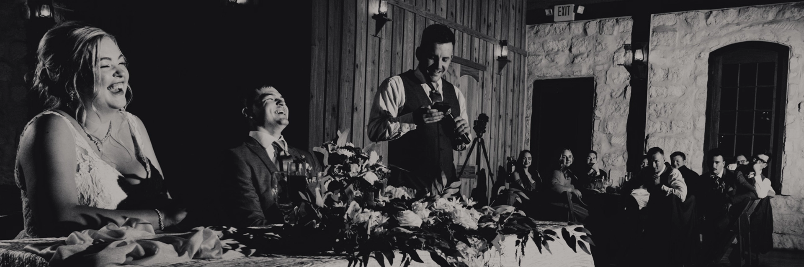

Public speaking is considered one of the scariest experiences for many of us.
You’ve been selected to deliver well wishes to the newlyweds. Check out our 5 tips on how to nail your speech!

Delivering a warm and heartfelt toast to the newlyweds as they embark on their new chapter of partnership will set the tone for the evening.
At this point, the couple has said their “I do’s”, taken a billion photos, maybe even snagged a bite of food.
Your speech is a blessing and recognition of the vows they just took in front of everyone. Don’t forget, this is a toast, not a ROAST.
1) “Don’t start with…. “For those who don’t know me, I am ______________”.
The truth is you were chosen by the newlyweds to represent them as their “best guy” or “main gal” because they consider you to a pivotal person in their relationship. You’ve got about 30 seconds to capture the audience’s attention, so opening with “I’m super nervous” or “I didn’t know I was supposed to make a speech tonight” isn’t setting a confident or celebratory tone. Open with your name, role you played in the wedding party and how you know the couple. “We initially met in a jail cell in Tijuana” may not be the line you put out there first, but we’ll get to that shortly. Starting with a joke, even a corny one does put everyone at ease, but play it safe and ensure you’re not insulting or demeaning the couple. The key in your opening is also NOT making it about YOU, but the two you’re all there to celebrate.
2) EVERYONE loves a Theme.
We find attraction of our friends and partners because of the attributes we hold endearing or appealing on our own. If it’s opposites attract situation, whether that be differences between your relationship with the couple, or characteristics of the newlyweds themselves, be sure to recognize and highlight those things. We’ve recently seen where toasters incorporate a question that is answered throughout their speech. Embrace the opportunity to set the stage with “How do I summarize a friendship that has lasted X years into a few special moments without making it in to a big inside joke”? Spend time answering that question in your speech.
3) Embarrassing does NOT equal funny.
Your goal in the speech is to ensure you do not embarrass the couple. Poking a little fun at either person is okay to a degree but avoid some key awkward moments. No one will laugh and it will be incredibly uncomfortable in the room.
4) THINGS TO AVOID
Don’t mention past relationships of either of the newlyweds. “Brad has certainly upgraded from some of his girlfriends of the past and I think it’s safe to say this isn’t another one-night stand”
Avoid highlighting personal shortcomings. “Caitlyn as we know is perpetually late and today was no different, she’ll even be late to her funeral”
Leave your own ego at the door. Make it about the couple, not YOU.
Steer clear of crude language. It’s not necessary to drop F-bombs to get your point delivered and will only invalidate the message you’re trying to convey.
5) Write it down.
Feeling like that open bar will give you the inspiration to just wing it? In our experience, toasters that write their speech down are more succinct, heartfelt, and brief than those trying a spur of the moment toast. It never hurts to practice and deliver the speech to a trusted confidant before the big day to refine and adjust your talking points. Print it out as well. Not only does it look nicer in photos, but you can give it to the couple afterwards!
Things to ALWAYS include:
Thank those who are there and celebrating with the newlyweds while acknowledging those who wanted to be there, but for whatever reason could not be in attendance.
Be Brief. There may be several toasters and the guests, and the couple wants to hear from you, but also wants to get the party going.
Give some advice. Toasts are not ONLY STORIES about the newlyweds, but an opportunity to provide praise, advice, and suggestions for a happy and successful relationship going forward
Be sure to raise a glass. Without raising a glass and sharing in a united cheers to the couple, you’ve only accomplished a TEDtalk. Be sure to wrap with your favorite beverage.
At the end of the day, you’re in a unique position to not only give endless praise and love, but to also set a tone for the remainder of the evening. Speak from the heart, be vulnerable, and most of all, be your best for the amazing couple you’re celebrating.
Cheers!